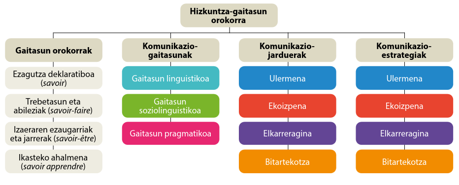
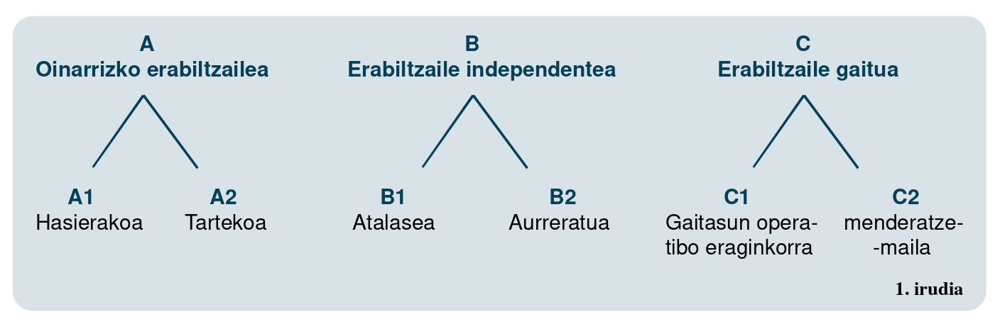

1 Hizkuntzen Ikaskuntza Irakaskuntza eta Ebaluaziorako Europako Erreferentzia Markoa eta Hizkuntzen Portfolio Europarra
Baliabideak: (Alario Trigueros et al., 2004; Davis et al., 2004; Europako Kontseilua, 2005b, 2020) *
Saio honetan, Europako hizkuntza politikaren oinarriak aztertzen dira. Ikasleek hizkuntza mailak eta hizkuntza portfolioa ulertzeko tresnak hartuko dituzte, eta beraien hizkuntza ibilbidea aztertzeko aukera izango dute.
Bereziki, saiatu behar dugu ulertzen zer ari garen esaten A1, B2 edo C1 esaten dugunean. Jakin badakigu ez dena berdin hogeita bi urteko irakaslegai baten komunikazio bidea eta ikasle izango dituen HH 4ko edo LH 2koaren komunikazio bidea. Baina hizkuntzaz eta hizkuntz komunikazioaz ari garenez, geure burua ezagututa, ikasleak ezagutzen saiatuko gara.
Sarrera Hizkuntza politikaren garrantzia Europako testuinguruan
HIIEEEM-ren Historia: Nola sortu zen, zein helburu dituen eta nola erabil daitekeen
Hizkuntza mailak
Baliabideen gaineko hausnarketa
1.1 Hizkuntza politikaren garrantzia Europako testuinguruan
Hemengo informazioaren oinarria Europar Batasuneko zenbait dokumentu ofizial da. Horrek ikasleari lagundu behar dio jakiten zer esaten den Europan, ez pentsatzen hemen deskribatzen den prosazko errealitatea errealitatearen deskripzioa denik.
Dokumentuak: (Europako Kontseilua, 2005a, 2005b, 2022; Europako Parlamentua, 2023)
1.1.1 Kohesioa, hazkundea eta enplegua atalean (3.)1
Kultura, hezkuntza eta kirola (3.6.)
Europar batasuneko hizkuntz politika (3.6.6.)
1.1.2 Oinarri juridikoa:
EBaren oinarria: Aniztasunean Batuta.
Maastrichteko Ituna
Europar Batasunaren Funtzionamenduari buruzko Tratatua
«la acción de la Unión se encaminará a desarrollar la dimensión europea en la enseñanza, especialmente a través del aprendizaje y de la difusión de las lenguas de los Estados miembros»
Hizkuntz aniztasuna oinarrizko balioa
Europar Batasunaren Oinarrizko Eskubideen Gutuna
Europar Batasuneko Oinarrizko Eskubideen Gutunak debekatu egiten du hizkuntzagatiko diskriminazioa (21. artikulua), eta hizkuntza-aniztasuna errespetatzeko betebeharra ezartzen dio Batasunari (22. artikulua).
1.1.3 Helburuak
La política lingüística de la Unión se basa en el respeto de la diversidad lingüística de todos los Estados miembros y en la creación de un diálogo intercultural en toda la Unión. Con el fin de poner en práctica el respeto mutuo, la Unión promueve la enseñanza y el aprendizaje de lenguas extranjeras y la movilidad de los ciudadanos a través de programas dedicados a la educación y la formación profesional. Se considera que el conocimiento de lenguas extranjeras es una de las capacidades básicas que ha de poseer todo ciudadano de la Unión para aumentar sus oportunidades de formación y de empleo. En su contribución a la Cumbre sobre los derechos sociales celebrada el 17 de noviembre de 2017 en Gotemburgo (Suecia), la Comisión expuso la idea de un «Espacio Europeo de Educación» en el que, para 2025, «hablar dos idiomas, además de su lengua materna, sea lo normal» (véase la Comunicación). La Unión colabora, asimismo, con los Estados miembros en la protección de las minorías sobre la base de la Carta Europea de las Lenguas Regionales o Minoritarias del Consejo de Europa
1.1.4 Emaitzak
A. Hizkuntza-politikaren bilakaera eta hizkuntzen arloko ikerketari laguntzea
Hizkuntzak ikasteko laguntza
Hizkuntza-gaitasunari buruzko datuen alderaketa
2005ean, Batzordeak hizkuntza-gaitasunaren Europako adierazleari buruzko komunikazio bat argitaratu zuen, estatu kide bakoitzeko hizkuntza-gaitasun orokorrak neurtzeko tresna bat2. Batasunak, halaber, Europako Kontseiluaren Hizkuntzen Europako Erreferentzia Esparru Bateratuaren3 erabilera sustatzen du: ikaskuntza, irakaskuntza, ebaluazioa. Tresna hori «hizkuntza-programak, ikasketa-planetarako jarraibideak, irakaskuntza- eta ikaskuntza-materialak eta atzerriko hizkuntzetako gaitasunak ebaluatzeko ahalik eta oinarri gardenena, koherenteena eta osatuena emateko» diseinatu zen. Gaur egun, oso zabalduta dago Europan eta beste kontinente batzuetan.
1.2 Europako Erreferentzia Marko Bateratua
Nola sortu zen, zein helburu dituen eta nola erabil daitekeen
Hizkuntzetarako Europako Erreferentzia Esparru Bateratua, Hizkuntzen Europako Erreferentzi Marko Bateratua, Hizkuntzen Europako Erreferentzia-Esparru Bateratua, Hizkuntzetarako erreferentzia-esparru komuna, Hizkuntzetarako Europako Marko Komuna, Europako Erreferentzia Marko Bateratua,Hizkuntzetarako Erreferentzia Sistema Europarra
1.2.1 EEMBren helburuak
elkarlana sustatzea eta erraztea herrialdeetako hezkuntza-erakundeen artean;
elkarren hizkuntza-egiaztagiriak onartzeko oinarri sendoa ematea; |
ikasle, irakasle, ikastaroen diseinatzaile, erakunde aztertzaile eta hezkuntza-arloko administrariei beren ahaleginak kokatzen eta koordinatzen laguntzea.
Europako Kontseilua (2005b)

1.2.2 Hizkuntza mailak
Neurtzeko bide (eta irizpide) ugari dago. Sarrera interesgarri eta antolatua irakur dezake interesatuak Europako dokumentu originalean Europako Kontseilua (2005b) .

Gai da irakurtzen edo entzuten duen ia guztia erraz ulertzeko. Badaki idatzizko nahiz ahozko iturri desberdinetatik datorren informazioa eta argudioak berreraikitzen, eta era koherentean eta labur adierazten. Badaki bat-batean, jariotasun handiz eta zehaztasunez gauzak adierazten, eta esanahiaren ñabardura txikiak bereizten ditu, baita konplexutasun handiko egoeretan ere.
Gai da era askotako testu luzeak irakurtzeko eta nolabaiteko eskakizun-mailari erantzuteko, eta gai da, orobat, testu horietan esanahi inplizituei antzemateko. Badaki jariotasunez eta bat-batean gauzak adierazten, esapide egokia aurkitzeko ahalegin handia egiten ari denik sumatzen ez zaiola. Hizkuntza malgutasunez eta eraginkortasunez erabil dezake, helburu sozial, akademiko eta profesionalekin. Testu argiak, ongi egituratuak eta xeheak ekoizteko gai da, baita gai konplexuei buruzkoak ere, testuaren antolaketa-, artikulazio- eta koherentzia-mekanismoak zuzen erabiliz.
Gai da gai zehatzei nahiz abstraktuei buruz diharduten testu konplexuetako ideia nagusiak ulertzeko, baita testu teknikoenak ere, betiere bere espezialitatearen arlokoak badira. Jatorrizko hiztunekin mintza daiteke, jariotasunez eta naturaltasunez, halako eran non ez solaskide batek ez besteak ez duten ahaleginik egin behar elkar ulertzeko. Testu argiak eta xeheak sor ditzake gai askori buruz, eta gai da, orobat, gai orokorrei buruzko ikuspegi jakin bat aldezteko, aukera bakoitzaren aldeko eta kontrako argudioak emanez.
Gai da argi eta hizkuntza estandarrean idatzitako testuen puntu nagusiak ulertzeko, gai ezagunei buruzkoak badira, lanaren esparruan, ikasketen esparruan eta aisialdian. Badaki hizkuntza hori erabiltzen den lurraldeetan bidaiatzean sor daitezkeen egoera gehienetan moldatzen. Gai ezagun edo interes pertsonalekoei buruzko testu soilak eta koherenteak osa ditzake. Esperientzien, gertaeren, nahien eta asmoen berri emateko gai da, eta gai da, orobat, bere iritziak labur-labur arrazoitzeko edo bere asmoak azaltzeko.
Bereziki esanguratsuak dituen esperientzia-esparruekin loturiko esaldiak eta esapideak, eguneroko bizitzakoak, ulertzeko gai da (bere buruari eta familiari buruzko oinarrizko informazioa, erosketei, intereseko lekuei, lanbide ei eta abarri buruzko informazioa). Badaki ataza soilak eta arruntak egiteko orduan komunikatzen, baldin eta ezagunak edo ohikoak dituen gaiei buruzko informaziotruke erraza eta zuzena bakarrik eskatzen badute. Badaki bere iraganaz eta inguruneaz deskribapen errazak egiten, baita bere berehalako beharrei buruzko deskribapenak egiten ere.
Gai da eguneroko bizitzan sarri erabiltzen diren esapideak ulertzeko eta erabiltzeko, eta baita berehalako beharrak asetzera bideratutako esaldi soilak osatzeko ere. Badaki bere buruaren eta besteren aurkezpena egiten, eta helbideari, gauzei eta ezagutzen duen jendeari buruzko oinarrizko informazio pertsonala ematen eta eskatzen. Oinarrizko harremanak izan ditzake, baldin eta solaskideak mantso eta argi hitz egiten badio eta laguntzeko prest badago.
Zehatzago ikusteko irakurleak jo beza jatorrizko argitalpenera (Europako Kontseilua, 2005b, 46. or. orr.). Edo berantago egindako askotariko kopietara4.
1.2.3 Baliabideen gaineko hausnarketa
EEMBren ikuskera arautzailea kontuan izanda, oso litekeena da dokumentu horrek besteko zabalpena gutxik bete izana.
Sarrera honetan ezin izan daiteke gure helburua horren zabalari oratzea. Bai, berriz, definitzen dituen elementuen azterketa bideratzeko auto-azterketarako tresna baten balioa goraipatzea:
1.2.4 Hizkuntzen Portfolio Europarra5
Jatorriz hizkuntza-ikasleari laguntzeko pentsatua da HPE. Helburua Europan ezartzen ari zen markoko ikuskerara hurbiltzea zen, hizkuntza ikaskuntzaren gaineko hausnarketaren bitartez ikastunak era kontzientean hizkuntzaren inguruko hainbat erabaki hartzeko zein hizkuntza gaitasunaz hausnartzeko.
Dokumentuak (Davis et al., 2004) hiru atal nagusi ditu:
- Hizkuntza-Biografia
- Hizkuntzen pasaportea
- Dosierra
1.2.4.1 Hizkuntza-Biografia
Lau atalek osatzen dute: Hizkuntzen ikaskuntzarako helburuen zehaztapena, ikaskuntza-ibilbidearen azterketa, hizkuntza eta kultura bizipen nagusienen gaineko hausnarketa eta momentuko hizkuntzen ikasketen inguruko lehentasunak esplizitu egiteko tartea.
1.2.4.2 Hizkuntzen pasaportea
Dokumentu hau hizkuntza-trebetasunen, hizkuntza-agirien eta hizkuntza-esperientzien bilduma da.
Honako zatiak ditu Pasaporteak: (1) Hizkuntza-trebetasunen Profila, Erreferentzia Marko Europarrarekin lotua; (2) Hizkuntza-esperientzien eta kulturarteko esperientzien laburpena. (3) Ziurtagiri eta diplomen zerrenda.
1.2.4.3 Dosierra
Sarri “portfolio” izena holakoetarako erabili ohi dugu Hezkuntzan eta beste zenbait jakintza esparrutan.
Dosierra proposatzen da aztertutako hizkuntzetan aritzeko gaitasunaren erakusgarrien lagin adierazgarria erakustea.
Zure DOSIERrean ondoko elementuak sar zenitzake:
- idazlan onen adibideak
- audio edo bideo-grabazioak
- azterlanen deskribapenak eta emaitzak
- dokumentuak, diplomak, ziurtagiriak
- egindako ikastaroen deskribapenak
- hizkuntza-aurrerapenari buruzko hausnarketak
- irakasleen edo tutoreen txostenak
- besteren iruzkinak zure gaitasunei buruz
- besteri erakusteko gorde nahi zenituzkeen gauzak
Davis et al. (2004), 48 orr.
1.3 Zereginak 📔
- HEEEB mailen analisia:
Ikasleek, banaka edo bikoteetan, HEEEB maila bat aukeratu eta horri buruzko poster bat sortuko dute. - Norberaren HPE:
Ikasleek beraien HPE propioa sortuko dute, hizkuntza ikaskuntza ibilbidea eta hizkuntza gaitasunak islatuz. Etxerako lana
(Alario Trigueros et al., 2000; Beacco et al., 2016; Europako Kontseilua, 2004a, 2004b, 2004c; Nafarroako Gobernua. Hizkuntza Departamentua, 2004)
Alario Trigueros, M. del C., Alonso Ramirez, M. de la C., Gomez Romero, M. B., & Robledo Ortega, M. A. (2000). Nire lehen portfolioa. Gida Didaktikoa (Hezkuntza, Unibertsitate eta Ikerketa Saila, Itzul.). Europako Kontseilua. https://www.euskadi.eus/contenidos/documentacion/inn_doc_lenguas/eu_def/adjuntos/500004e_Pub_MEC_Portfolioa_02_e.pdf
Beacco, J.-C., Fleming, M., Goullier, F., Thürmann, E., Vollmer, H., & Sheils, J. (2016). The language dimension in all subjects: A handbook for curriculum development and teacher training. Council of Europe Publishing. https://rm.coe.int/a-handbook-for-curriculum-development-and-teacher-training-the-languag/16806af387
Bleichenbacher, L., Goullier, F., Rossner, R., Sura, A., Andrade, A., Candelier, M., de Carlo, M., Diederich, C., Kuster, W., & Vollmer, H. (2019). Teacher competences for languages in education: Conclusions of the project. https://www.ecml.at/Portals/1/5MTP/Bleichenbacher/CEFRLT-conclusions-EN.pdf?ver=2019-11-29-150323-533
Europako Kontseilua. (2004a). Nire dosierra. Hizkuntzen Portfolio Europarra. Lehen Hezkuntza (8-12 urte). Egiaztatutako eredua: Nº 51.2003 zk. (euskara). Ministerio de Educación y Cultura (Esp). http://eibz.educacion.navarra.es/baliabideak/portfolioa/cda/doc/cap_I/portfolios/primaria/pel_primaria_biografia_eusk.pdf
Europako Kontseilua. (2004b). Nire hizkuntzea-biografia. Hizkuntzen Portfolio Europarra. Lehen Hezkuntza (8-12 urte). Egiaztatutako eredua: Nº 51.2003 zk. (euskara). Ministerio de Educación y Cultura (Esp). http://eibz.educacion.navarra.es/baliabideak/portfolioa/cda/doc/cap_I/portfolios/primaria/pel_primaria_biografia_eusk.pdf
Europako Kontseilua. (2004c). Nire hizkuntzen pasaportea. Hizkuntzen Portfolio Europarra. Lehen Hezkuntza (8-12 urte). Egiaztatutako eredua: Nº 51.2003 zk. (euskara). Ministerio de Educación y Cultura (Esp). http://eibz.educacion.navarra.es/baliabideak/portfolioa/cda/doc/cap_I/portfolios/primaria/pel_primaria_dossier_eusk.pdf
Nafarroako Gobernua. Hizkuntza Departamentua. (2004). Portfolioa Nafarroan: Hastapenak / Fundamentos. Portfolioa Nafarroan: Hastapenak / Fundamentos. http://eibz.educacion.navarra.es/baliabideak/portfolioa/cda/doc/e/kap_01.html
https://www.europarl.europa.eu/ftu/pdf/es/FTU_3.6.6.pdf↩︎
Comunicación de la Comisión al Parlamento Europeo y al Consejo - El indicador europeo de competencia lingüística. https://eur-lex.europa.eu/legal-content/ES/ALL/?uri=CELEX%3A52005DC0356↩︎
Common European Framework of Reference for Languages (CEFR) https://www.coe.int/en/web/common-european-framework-reference-languages/home/-/asset_publisher/FfMaiIs48Xwv/content/alte-guidelines-for-the-development-of-language-for-specific-purposes-tests?_101_INSTANCE_FfMaiIs48Xwv_viewMode=view/↩︎
https://eu.wikipedia.org/wiki/Hizkuntzetarako_Europako_Erreferentzia_Esparru_Bateratua↩︎
https://www.euskadi.eus/contenidos/documentacion/inn_doc_lenguas/eu_def/adjuntos/500003e_Pub_Europa_Portfolioa_01_e.pdf↩︎